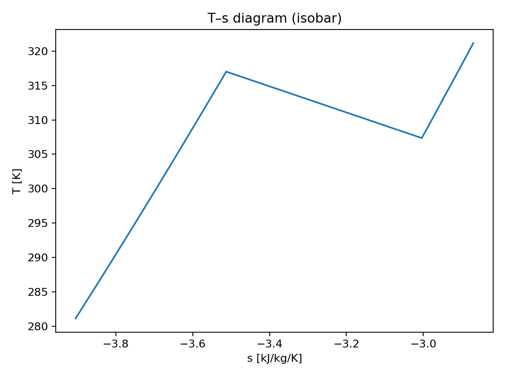
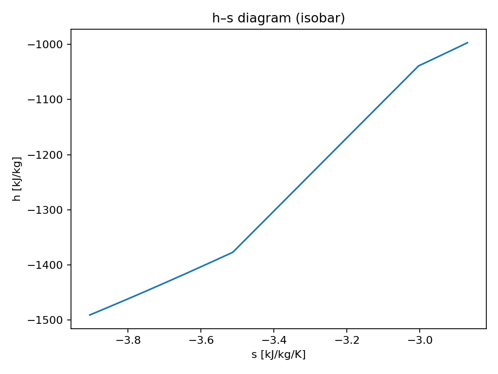

<div style="margin-top:1rem">
  <h2>Property diagrams (latest run)</h2>
  <p><b>Isobar:</b> P = 1.013 bar &nbsp;&nbsp; <b>Property package:</b> PengRobinson</p>
  <div style="display:flex; gap:18px; flex-wrap:wrap;">
    <div>
      <h3>T–s</h3>
      
    </div>
    <div>
      <h3>h–s</h3>
      
    </div>
  </div>
</div>